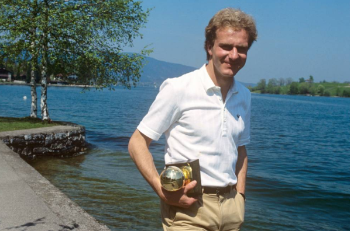
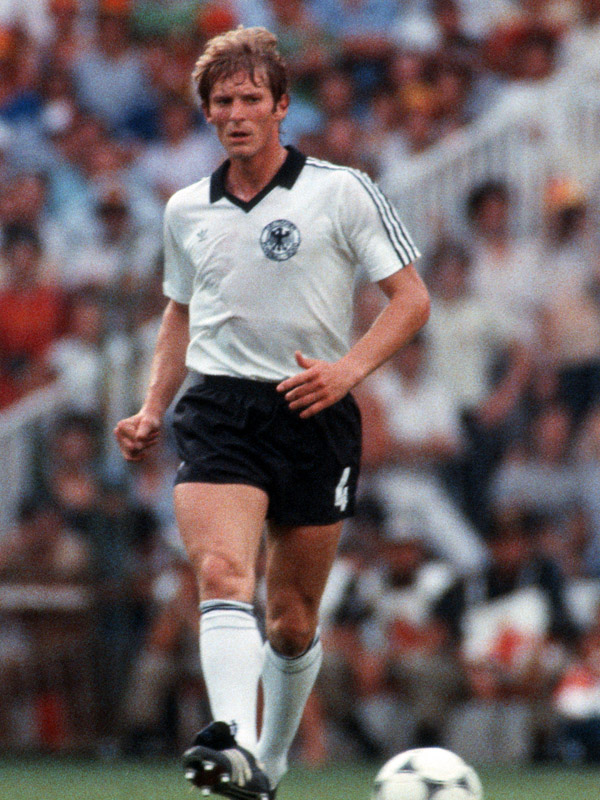
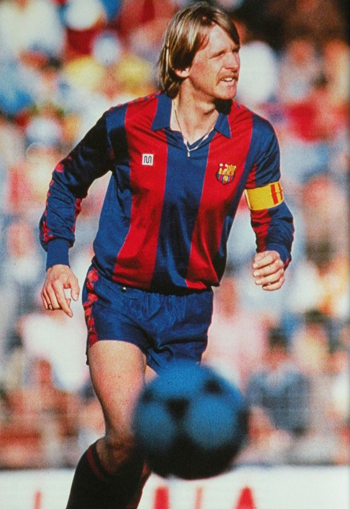

Karl-Heinz RUMMENIGGE - 1980

- Un talent enfin récompensé
Karl-Heinz Rummenigge dépassa tous ses glorieux aînés dans le plus formidable plébiscite de l'histoire : 122 points sur un total possible de 125.
Nationalité : Allemande
Né le : 25 septembre 1955, à Lippstadt (ALL)
Taille : 1,82
Poids : 79 kg
Poste : attaquant
Clubs : Borussia Lippstadt (1973-1974), Bayern Munich (1974-1984), Inter Milan (1984-1987) et Servette Genève (1987-1989)
Palmarès de joueur : Championnat d'Europe des nations 1980 ; Coupe intercontinentale des clubs 1976 ; Coupe des champions 1976 ; Championnat de RFA 1980 et 1981 ; Coupe de RFA 1982 et 1984 ; Supercoupe de RFA 1982 ; meilleur buteur du Championnat de RFA 1980 (26 buts), 1981 (29) et 1984 (26) ; meilleur buteur du Championnat Suisse 1989 (24)
Bilan en club : 712 matchs, 229 buts
Bilan en équipe nationale : 95 sélections A, 45 buts (1976-1986)
Bilan en phase finale de Coupe du monde :3 participations (2e en 1978 et 1986), 19 matches, 9 buts (1978-1986)
Palmarès Ballon d'Or : vainqueur en 1980 et 1981 et(2e en 1979)
Classement du Ballon d’Or France Football 1980 :

Karl-Heinz Rummenigge (RFA / Bayern Munich),
122 pts.

Bernd Schuster (RFA / FC Barcelone),
34 pts.
Michel Platini (France / AS Saint-Etienne),
33 pts.
Retour à l'accueil
 Karl-Heinz RUMMENIGGE - 1980
Karl-Heinz RUMMENIGGE - 1980